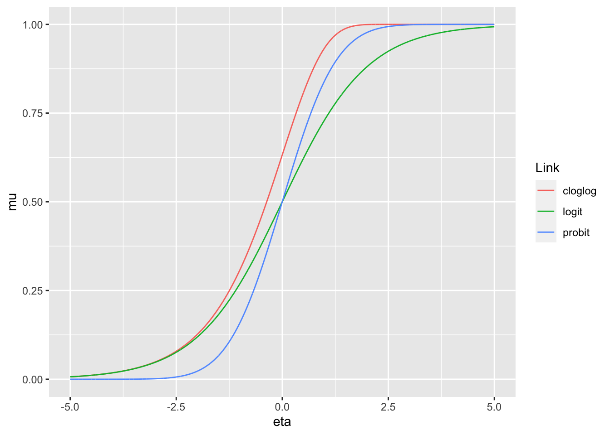

Chapter 3 How are GLMs “different”?
3.1 Introdution
So we’ve talked about the issues that linear models can run into. the question now is how do we deal with these issues? What we’re going to need to do is expand the type of model we’re trying to fit. In linear regression we assumed two things: that the response variable \(Y_i\) is distributed normally, with constant variance \(\sigma^2\), and that the mean of the response variable is a linear combination of the explanatory variables. These two assumptions can be stated as
- \(Y_i \sim \mathcal{N}(\mu_i,\sigma^2)\)
- \(\mu_i = \beta_0 + \beta_{1}X_{i,1},...+\beta_{k}X_{i,k}\)
In this chapter we’re going to make our model more general by expanding these two assumptions. The first assumption, which we will call the random component, is going to change from \(Y\) being distributed normally to \(Y\) being distributed according to some probability family. The second assumption is going to change from \(\mu_i\) directly equaling the linear predictor to some function of \(\mu_i\) being equal to this linear predictor.
3.2 Assumptions of a GLM
GLMs are made up of two components: a random component, and a structural component. In general, what we’re saying is that the response variable of interest is a random variable that follows a specific probability distribution (random component). This probability distribution is, in some way, related to a linear combination of the explanatory variables (systematic component). This linear combination of the explanatory variables is where the “linear” in “generalized linear model” comes from. In linear regression, which is a special case of the generalized linear model, the random component is that Y comes from a normal distribution: \(Y_i\sim N(\mu_i,\sigma^2)\) and the systematic component is that the mean is some linear combination of the explanatory variables: \(\mu_i=\beta_0+\beta_1X_{1i}+...+\beta_kX_{ki}\). With GLMs, our goal is to extend this framework so that we’re not just limited to the normal distribution for the random component of our model, for reasons we discussed in the last chapter.
However, when we fit these models, we need to be sure of a couple of things. We need to ensure that for a linear combination of explanatory variables, we can identify which distribution the response variable comes from. We also need to ensure that the parameters of that distribution we’re trying to fit are estimable. To ensure that we’re able to properly fit these models, GLMs consider a specific kind of family of distributions for the random component: the Exponential Dispersion Model.
3.3 Framework
3.3.1 Exponential Dispersion models
An exponential dispersion model is a specific type of random variable, whose pdf follows a specific form: \[ f_{Y}(y) = a(y,\phi)exp\left[\frac{y\theta - \kappa(\theta)}{\phi} \right] \] in this form, \(\theta\) is called the canonical parameter, and \(\phi\) is called the dispersion parameter. For our purposes, the function \(a(y,\phi)\) is not of much interest, but it is needed to guarantee that \(f_Y(y)\) integrates to 1, and is therefore a valid probability density function. \(\kappa(\theta)\) is called the cumulant function, and will be useful to us in estimation. Another term for an exponential dispersion model is to say that the family of random variables is an exponential family.
A surprising, and fortunate, number of families of distributions are exponential dispersion models. Notably, some of them are
- Normal random variables
- Bernoulli random variables
- Binomial random variables
- Poisson random variables
- Exponential random variables
- Gamma random variables
- Negative binomial random variables
We’ll spare the details for most of these families, but to show the general idea for how we decide whether or not a family of random variables is an exponential dispersion model, we shall consider the poisson random variable.
Example: For a poisson random variable, the pmf is written as
\[ f_Y(y) = e^{-\lambda}\frac{\lambda^y}{y!} \]
by applying the identity \(x=e^{log(x)}\) to the numerator, we see that this is equivalent to
\[ f_Y(y) =\frac{1}{y!} exp\left[-\lambda + y log(\lambda) \right] = \frac{1}{y!} exp\left[\frac{y log(\lambda) -\lambda}{1} \right] \]
and we see that the poisson random variable is an exponential dispersion model with dispersion parameter \(\phi = 1\), with canonical parameter \(\theta = log(\lambda)\) and with cumulant function \(\kappa(\theta) = \lambda = e^\theta\). Notice how we left out the \(\frac{1}{y!}\) term of the exponential because it was not needed to put the function into this important form. \(\Box\)
3.3.2 Properties of EDMs
Once we can get a probability distribution function into the exponential dispersion model form, we can connect this form to both the mean and variance of the random variable. The expected value (mean) of the random variable is simply the first derivative of the cumulant function with respect to the canonical parameter: \[ E[Y] =\mu= \frac{d}{d\theta}\kappa(\theta) \] The cumulant function is also related to the variance of the random variable. The variance of the random variable is the dispersion parameter multiplied by the second derivative of the cumulant function with respect to the canonical parameter: \[ var(Y) = \phi \frac{d^2}{d\theta^2} \kappa(\theta) \] The second part of this expression is an important quantity, called the variance function. Notice that it is equal to the first derivative of the expected value of Y as well: \[ V(\mu) = \frac{d^2}{d\theta^2} \kappa(\theta) = \frac{d}{d\theta}\mu \] It is worth noting that, in addition to helping us estimate properties of \(Y\), the variance function uniquely determines the family of distributions (type of random variable) for a given EDM. For instance, following our previous example, since \(\kappa(theta) = e^{\theta}\), the variance function is \(V(\mu) = \frac{d^2}{d\theta^2} e^\theta = e^\theta = \lambda = \mu\). What this means is that any EDM with variance function \(V(\mu) = \mu\) will be a poisson random variable.
3.3.3 Linking the EDM to the explanatory data
Recall, just for a second, the goal of constructing these models. We have a response variable, \(Y_i\), and a collection of explanatory variables \(X_1, X_2, X_3,...X_k\). We want to be able to look at a combination of the explanatory variables and draw some conclusions about \(Y\). Perhaps we want to predict Y with a point estimator. If we make this sort of prediction, it’s also of interest to know how precise that estimate will be, so we may wish to find an interval estimate for the prediction as well. Ultimately, all of these things come from the distribution of \(Y\), so the thing that is of interest is to be able to know what the probability distribution of \(Y\) is given the input values of the \(X_i\)’s.
As stated before, the L in GLM stands for linear, and these explanatory variables are where that linearity comes into play. In GLMs, we’re assuming that the quantity we’ll use to predict the response variable \(Y\) is a linear combination of the explanatory data \(\beta_0+\beta_1X_{1}+...+\beta_kX_{k}\). We will call this quantity the linear predictor; a common shorthand way of writing it is to use the greek letter \(\eta = \beta_0+\beta_1X_{1}+...+\beta_kX_{k}\). In practice, we often have multiple repetitions of the explanatory variables, where \(Y_i\) is a random variable who’s distribution is somehow linked to the covariates \(X_{1i}, X_{2i}, X_{3i},...X_{ki}\). In this case, we will denote the separate linear predictors as \(\eta_i = X_{1i}, X_{2i}, X_{3i},...X_{ki}\). Note that although the variables may change, the coefficients \(\beta_0, \; \beta_1, \; ... \; \beta_k\) are the same for every \(\eta_i\). These \(\beta\) coefficients are the thing we must estimate to fit our GLM.
The question remains of how we connect \(\eta\) to the distribution of \(Y\). First, we have to suppose what kind of distribution \(Y\) is coming from (is it a poisson random variable? Binomial?) and then we need to find some function g() such that the expected value \(E[Y] = \mu\) is simply \(g(\mu) = \eta\). For this, we have to place a couple restrictions on g. First, g must be a strictly monotonic function (strictly increasing or strictly decreasing) from some subset of the real numbers onto the set of all values that \(\mu\) could be. We require the monotonicity to ensure that we don’t have multiple separate means being linked to the same linear predictor. This function also has to be differentiable to make sure that the tools we use to estimate \(\mu\) don’t break. In practice, these requirements don’t come up very much, since typically there are a couple of link functions that get used for each family of probability densities.
One special link function for each EDM family is the canonical link function. For an EDM family of distributions, the canonical link function is the function \(g(\mu)\) that satisfies \(\eta=\theta=g(\mu)\).
The canonical link function isn’t the only valid link function. Take for example the binomial family of distributions, and let \(Y\sim Binom(n,p)\), for some known n. Note that \(\mu = p\). In this case, the set of possible values of \(p\) is the unit interval \((0,1)\). The canonical link function for this family is the logit function: \[ g(p) = log\left(\frac{p}{1-p}\right) \]
However, there are a couple of other link functions that satisfy the required assumptions. Notably, we have the probit function: \[ g(p)=\Phi^{-1}(p) \] which is just the inverse of the normal CDF \(\Phi\). In other words, \(\Phi^{-1}(p) = \tao\) where \(\tao\) is the real number that satisfies \(P(Z\leq\tao)=p\) with \(Z\) being a standard normal random variable (mean 0 and variance 1).
One more notable link function for the binomial family is complimentary log-log (or c-log-log) model. This link function is \[ g(p) = log(-log(1-p)) \]
All three of these link functions map the real numbers to the unit interval (0,1). Note that since \(g(\mu)=\eta\), and since these link functions are invertible (guaranteed by differentiability and strict monotonicity), we can express this as \(\mu = g^{-1}(\eta)\). Often times this second form is a more intuitive way to think about how the linear predictors relate to the mean response.
It can be seen that all three of these link functions are sigmoid functions, but that they have slightly different properties:

The consequences of these differences will not be discussed here, this example exists purely to illustrate that an EDM family can have multiple distinct link functions. The consequenses of these varying link functions varies from family to family.
3.3.4 Formal definition of a GLM
Formally, a Generalized Linear Model is made of two components: the probability family and the link function. Given a set of data with response variable \(Y\) and explanatory variables \(X_1, ... X_k\), we wish to build a Generalized Linear Model. We assume that each \(Y_i\) follows a probability distribution from a given EDM family of distribution with mean \(\mu_i\) and dispersion parameter \(\phi\): \(\mu_i\) \(Y_i \sim EDM(\mu_i,\phi)\), where \(\mu_i\) is such that \(g(\mu_i) = \beta_0 + \beta_1X_{i,1} + ... \beta_kX_{i,k}\) for the link function \(g(\mu_i)\) and some vector of parameters \((\beta_0...\beta_k)\). We assume all of this is true, and then estimate the parameters \((\beta_0...\beta_k)\) using the data and maximum likelihood estimation algorithms. In this book, we will leave these estimation algorithms “under the hood” for brevity’s sake, and focus on some common applications of these GLMs. Generally, to fit one of these models in R, you will need to know the family and the link function, as defined above.